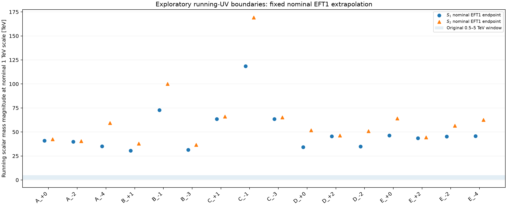
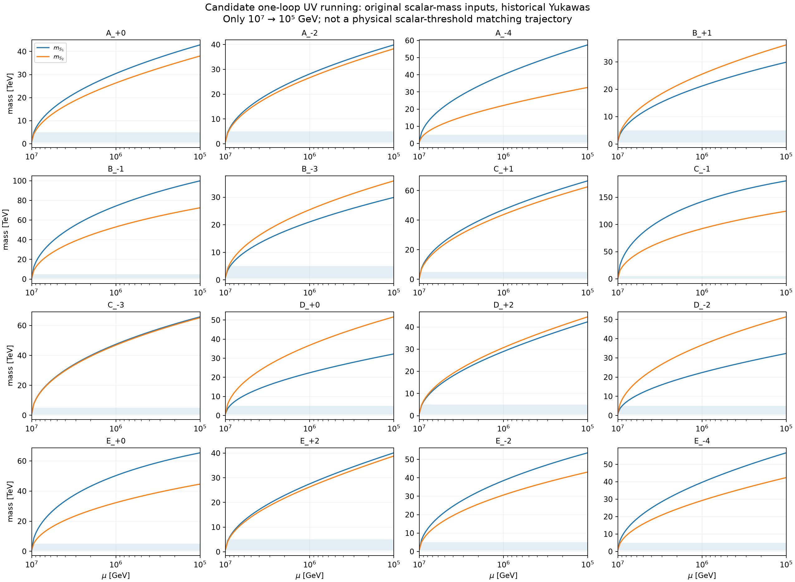

Historical high-scale scalar and Yukawa inputs at 10^7 GeV were evolved with the candidate one-loop RGEs. The nominal 1 TeV scalar-EFT endpoint masses below are formal diagnostics, not physically matched thresholds when the scalar masses are large. No neutrino-data exclusion follows.
| Model | Formal mS1 at 1 TeV [TeV] | Formal mS2 at 1 TeV [TeV] | rhoF at 100 TeV |
|---|---|---|---|
| A_+0 | 40.9155 | 42.3856 | 0.411017 |
| A_-2 | 39.89 | 40.5393 | 0.380523 |
| A_-4 | 35.1197 | 59.4371 | 0.524996 |
| B_+1 | 30.4184 | 37.8432 | 0.35929 |
| B_-1 | 72.8071 | 100.076 | 1.07037 |
| B_-3 | 31.3093 | 36.4894 | 0.356154 |
| C_+1 | 63.5017 | 66.1264 | 0.586791 |
| C_-1 | 118.583 | 169.101 | 1.69761 |
| C_-3 | 63.5579 | 65.0881 | 0.590349 |
| D_+0 | 34.1921 | 51.7206 | 0.495521 |
| D_+2 | 45.4834 | 46.3077 | 0.407491 |
| D_-2 | 34.7952 | 50.8104 | 0.492456 |
| E_+0 | 46.442 | 64.0919 | 0.644065 |
| E_+2 | 43.4201 | 44.4576 | 0.372919 |
| E_-2 | 45.304 | 56.5035 | 0.525467 |
| E_-4 | 45.7779 | 62.6794 | 0.530942 |

